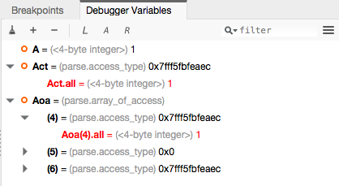
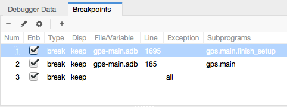
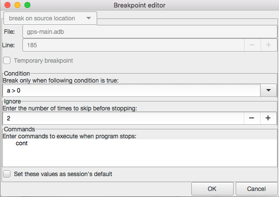
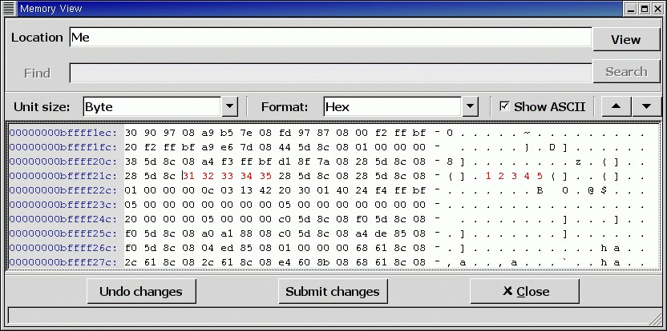
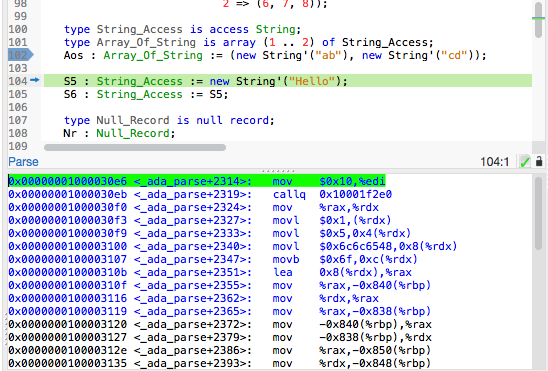

10. Debugging¶
GPS also serves as a graphical front-end for text-based debuggers such as GDB. If you understand the basics of the underlying debugger used by GPS, you will better understand how GPS works and what kind of functionality it provides.
Please refer to the debugger-specific documentation, e.g. the GNAT User’s Guide (chapter Running and Debugging Ada Programs), or the GDB documentation for more details.
Debugging is tightly integrated with other components of GPS. For example, you can edit files and navigate through your sources while debugging.
To start a debug session, click on the Debug button in the main toolbar or go to the menu and choose either the name of your executable, if you specified the name of your main program(s) in the project properties, or start an empty debug session using the menu. You can then load any file to debug, by using the menu.
You first need to build your executable with debug information (-g switch), either explicitly as part of your project properties or via the Debug build mode (see The Build Mode for more details).
Create multiple debuggers by using the (or the corresponding toolbar button) menu several times: this creates a new debugger each time. All debugger-related actions (e.g. stepping, running) are performed in the current debugger, represented by the current debugger console. To switch to a different debugger, select its corresponding console. Setting breakpoints, though, will be done for all debuggers, to help debug when you work on multiple executables that share code.
After the debugger has been initialized, you have access several new views: the debugger console (in a new page, after the Messages window), the Breakpoints views and the Variables view.
You can now access any of the menus under , and you also have access to additional contextual menus, in particular in the source editor where you can easily display variables, set breakpoints, and get automatic displays (via tooltips) of object values.
To exit the debugger without quitting GPS, use the menu, which terminates your current debug session, or the menu which terminates all of your current debug sessions.
10.1. The Call Stack View¶

The call stack view lists the frames corresponding to the current execution stack for the current thread or task.
The bottom frame corresponds to the outermost frame (where the thread is
currently stopped). This frame corresponds to the first function executed
by the current thread (e.g, main if the main thread is in C).
Click on any frame to switch to that caller’s context; this updates the
display in the source window. Use the up and down buttons in the tool bar
to go up and down one frame in the call stack.
The local configuration menu allows you to choose which information you want to display in the call stack window (via check buttons):
:
The debugger frame number (usually starts at 0 or 1).
:
The machine address corresponding to the function’s entry point.
:
The name of the subprogram.
:
The parameters to the subprogram.
:
The filename and line number information.
By default, only the subprogram name is displayed. Hide the call stack view by closing it and show it again using the menu menu.
Showing extra information like the value for parameters requires more work from the debugger, and thus will be slower.
10.2. The Variables View¶
The Variables view displays the value of selected variables or debugger command every time the debugger stops. The display is done in a tree, so that for instance the fields of a record are displayed in child nodes (recursively).
Access types (or pointers) can also be expanded to show the value they reference.
Values that have been modified since the debugger last stopped are highlighted in red.
This value is very similar to The_Data_Browser.
10.3. The Breakpoint Editor¶
Access the breakpoint editor from the menu. It allows you to manipulate the various kinds of breakpoints: those at a source location, on a subprogram, at an executable address, on memory access (watchpoints), or on Ada exceptions.
This view lists the existing breakpoints that are currently set in the debugger. You can quickly and conveniently enable or disable breakpoints by clicking on the checkboxes directly in the list.
Select a breakpoint in the list and click on the View button in the toolbar to shows the corresponding editor at that location. You can alternatively double-click on the breakpoint.
To view the details of a breakpoint, select it in the list and click on the Edit button in the toolbar. You can also do a long click on the breakpoint (keep your mouse pressed for a short while).
This opens up a separate dialog that shows the various attributes:
Details on where the breakpoint is set: the file and line, the specific address in memory, or the name of the exception which will stop the debugger when raised. These are not editable, so to change this you must create a new breakpoint instead;
The conditions to be met for the debugger to stop at that location. Such conditions can refer to variables valid at that location, and for instance test the value of specific variables;
The number of times that the breakpoint should be ignored before the debugger actually stops. This is useful when you know the error occurs after the 70th time hitting the breakpoint;
Debugger commands to execute when reaching the breakpoint.
When running VxWorks AE, this dialog also lets you two extra properties:
The scope indicates which tasks will be stopped. Possible values are:
- task: The breakpoint only affects the task that was active when the breakpoint was set. If the breakpoint is set before the program is run, the breakpoint affects the environment task.
- pd: Any task in the current protection domain is affected by the breakpoint.
- any: Any task in any protection domain is affected by the breakpoint. This setting is only allowed for tasks in the Kernel domain.
The action indicates which tasks are stopped when the breakpoint is hit:
- task: only the task that hit the breakpoint.
- pd: all tasks in the current protection domain.
- all: all stoppable tasks in the system.
Both of these properties can either be configured for the specific breakpoint, or configured as the default for the session, so that from then on every breakpoint will have the specified values for scope and action.

To create new breakpoints, click on the Add button in the toolbar. This opens up the same dialog as above, but lets you edit the top section (file, line, exception, address,...). Select the type of the breakpoint or watchpoint at the top.
If you enabled the preference , GPS automatically saves the currently set breakpoints and restores them the next time you debug an executable in the same project. This allows you to immediately start debugging your application without having to set the breakpoints every time. These breakpoints will be reused for all executables in the same project.
10.4. The Memory View¶
The memory view allows you to display the contents of memory by specifying either an address or a variable name.
To display memory contents, enter either the address using the C
hexadecimal notation (0xabcd) or the name of a variable in the
Location text entry. (If a variable is entered, the underlying
debugger computes its address.) Then either press Enter or click
the View button. GPS displays the memory with the corresponding
addresses in the bottom text area.
Specify the unit size (Byte, Halfword or Word) and the format (Hexadecimal, Decimal, Octal, or ASCII) and you can display the corresponding ASCII value at the same time.
The up and down arrows as well as the Page up and
Page down keys in the memory text area allow you to walk through the
memory in order of ascending or descending addresses respectively.
Finally, modify a memory area by clicking on the location you want to modify and entering the new values. Modified values appear in a different color (red by default) and are only written to the target when you click on the Submit changes button. Clicking on Undo changes or going up or down in the memory also undoes your editing.
Clicking on Close closes the memory window, canceling your last pending changes, if any.
10.5. Using the Source Editor when Debugging¶
When debugging, the left area of each source editor provides the following information:
Current line executed
The line about to be executed by the debugger is highlighted in green (by default), and a green arrow is displayed on its left side.
- Lines with breakpoints
The line number (if present, otherwise the first few pixels) is highlighted with a background color for lines where breakpoints have been set. Add or delete breakpoints by clicking on the line number. These breakpoints can be set or unset even when no debugger is running.
The second area in the source editor is a text window on the right that displays the source files, with syntax highlighting. If you hold the pointer over a variable, GPS displays a tooltip showing the value of that variable. Disable these automatic tooltips using the preferences menu.
At all times, the contextual menu of the source window contains a submenu providing some or all of the entries below. These entries are dynamic and apply to the entity under the pointer (depending on the current language). In addition, if you have made a selection in the editor, the text of the selection is used instead. This allows you to easily display complex expressions (for example, you can add comments to your code with expressions you want to display in the debugger).
Displays the selection (or by default the name under the pointer) in the data window. GPS automatically refreshes this value each time the process state changes (e.g after a step or a next command). To freeze the display, click on the corresponding icon in the browser or use the contextual menu for that item (see The_Data_Browser).
Dereferences the selection (or by default the name under the pointer) and displays the value in the data browser.
Brings up the memory view dialog and explores memory at the address of the selection.
Sets a breakpoint on the line under the pointer. This menu is always enabled, even when no debugger is started. This means that you can prepare breakpoints while working on the code, before you even start the debugger.
Sets a breakpoint at the beginning of the subprogram named selection. This menu is always enabled, even when no debugger is started. This means that you can prepare breakpoints while working on the code, before you even start the debugger.
Continues execution (the program must have been started previously) until it reaches the specified line.
Jumps to the current line of execution. This is particularly useful after navigating through your source code.
10.6. The Assembly Window¶
It is sometimes convenient to look at the assembly code for the subprogram or source line you are currently debugging.
Open the assembly window by using the menu.
The current assembler instruction is highlighted on the left with a green arrow. The instructions corresponding to the current source line are highlighted (by default in red). This allows you to easily see where the program counter will point after you press the Next button on the tool bar.
Move to the next assembler instruction using the Nexti (next instruction) button in the tool bar. If you choose Stepi instead (step instruction), it steps into any subprogram being called by that instruction.
For efficiency purposes, GPS only displays a small part of the assembly
code around the current instruction. Specify how many instructions are
displayed in the preferences dialog. Display
the instructions immediately preceding or following the currently displayed
instructions by pressing one of the Page up or Page down keys
or using the contextual menu in the assembly window.
A convenient complement when debugging at the assembly level is the ability to display the contents of machine registers. When the debugger supports it (as gdb does), select the menu to get an item in the data browser that shows the current contents of each machine register and that is updated every time one of them changes.
You might also choose to look at a single register. With gdb, select the menu, enter something like:
output /x $eax
in the field and select toggle button Expression is a subprogram call. This creates a new browser item that is refreshed every time the value of the register (in this case eax) changes.
10.7. The Debugger Console¶
The debugger console is the text window located at the bottom of the main window. It gives you direct access to the underlying debugger, to which you can send commands (you need to refer to the underlying debugger’s documentation, but usually typing “help” will gives you an overview of the available commands).
If the underlying debugger allows it, pressing Tab in this window
provides completion for the command being typed (or its arguments).
Additional commands are defined here to provide a simple text interface to some graphical features. Here is the complete list of such commands (the arguments between square brackets are optional and can be omitted):
tree display expression
This command displays the value of the expression in the Variables view. The
expressionshould be the name of a variable, or any expression matching the source language of the current frame (for instanceA(0).Field).tree display command
This command executes the gdb command, and displays the result in the Variables view. The
commandshould be an internal debugger command, for instanceinfo local.
graph (print|display) expression [dependent on display_num] [link_name name] [at x, y] [num num]
Create a new item in the browser showing the value of
Expression, which is the name of a variable, or one of its fields, in the current scope for the debugger. The command graph print creates a frozen item, one that is not automatically refreshed when the debugger stops, whilegraph displaydisplays an item that is automatically refreshed.The new item is associated with a number displayed in its title bar. This number can be specified with the
numkeyword and can be used to create links between the items, using the second argument to the command,dependent on. By specifying the third argument, the link itself (i.e. the line) can be given a name that is also displayed.
graph (print|display) `command`
Similar to the above, except you use it to display the result of a debugger command in the browser. For example, using gdb, if you want to display the value of a variable in hexadecimal rather than the default decimal, use a command like:
graph display `print /x my_variable`This evaluates the command between back-quotes every time the debugger stops and displays the result in the browser. The lines that have changed are automatically highlighted (by default, in red).
graph (enable|disable) display display_num [display_num ...]
Change the refresh status of items in the canvas. As explained above, items are associated with a number visible in their title bar.
The graph enable command forces the item to be refreshed automatically every time the debugger stops and graph disable freezes the item, preventing its display from being changed.
graph undisplay display_num
Remove an item from the browser.
10.8. Customizing the Debugger¶
GPS is a high-level interface to several debugger backends, in particular gdb. Each backend has its own advantages, but you can enhance the command line interface to these backends through GPS by using Python.
This section provides a short such example whose goal is to demonstrate the notion of an “alias” in the debugger console. For example, if you type just “foo”, it executes a longer command, such as one displaying the value of a variable with a long name. gdb already provides this feature through the define keywords, but here we implement that feature using Python in GPS.
GPS provides an extensive Python API to interface with each of the running debuggers. In particular, it provides the function “send”, used to send a command to the debugger and get its output, and the function “set_output”, used when you implement your own functions.
It also provides, through hook, the capability to monitor the state
of the debugger back-end. In particular, one such hook,
debugger_command_action_hook is called when the user types a
command in the debugger console and before the command is executed. This
can be used to add your own commands. The example below uses this hook.
Here is the code:
import GPS
aliases={}
def set_alias(name, command):
"""Set a new debugger alias. Typing this alias in a debugger window
will execute command"""
global aliases
aliases[name] = command
def execute_alias(debugger, name):
return debugger.send(aliases[name], output=False)
def debugger_commands(hook, debugger, command):
global aliases
words = command.split()
if words[0] == "alias":
set_alias(words[1], " ".join (words [2:]))
return True
elif aliases.has_key(words [0]):
debugger.set_output(execute_alias(debugger, words[0]))
return True
else:
return False
GPS.Hook("debugger_command_action_hook").add(debugger_commands)
The list of aliases is stored in the global variable aliases, which is modified by set_alias. Whenever the user executes an alias, the real command is sent to the debugger through execute_alias.
The real work is done by debugger_commands. If you execute the alias command, it defines a new alias. Otherwise, if you type the name of an alias, we want to execute that alias. And if not, we let the underlying debugger handle that command.
After you copied this example in the $HOME/.gps/plug-ins directory,
start a debugger as usual in GPS, and type the following in its console:
(gdb) alias foo print a_long_long_name
(gdb) foo
The first command defines the alias, the second line executes it.
This alias can also be used within the graph display or tree display commands so the value of the variable is displayed in the data window, for example:
(gdb) graph display `foo`
(gdb) tree display `foo`
You can also program other examples. You could write complex Python functions, which would, for example, query the value of several variables and pretty-print the result. You can call any of these complex Python functions from the debugger console or have it called automatically every time the debugger stops via the graph display command.
10.9. Command line interface¶
GPS is still running the standard gdb underneath. So any command that you might be used to run in gdb can also be executed from the Debugger Console.
In particular, gdb has a feature where it reads initialization commands from a .gdbinit configuration file. Here are some pieces of information if you would like to use such files:
When gdb starts, the current directory (which is where you should put your .gdbinit file is the environment’s current directory. GPS doesn’t override it. In general, this will also be the directory from which you started GPS itself. You can type:
(gdb) pwdin the debugger console to find out exactly what the directory is.
gdb always loads the global configuration .gdbinit in your home directory. It can also load a .gdbinit from the current directory, but this feature is disabled by default for security reasons to avoid malicious scripts.
To enable the local .gdbinit, you will need to create the global one as well, with a contents similar to:
add-auto-load-safe-path <your directory> set auto-load local-gdbinitIf you feel safe, you can replace “<your directory>” with “/” to always allow it on your system.